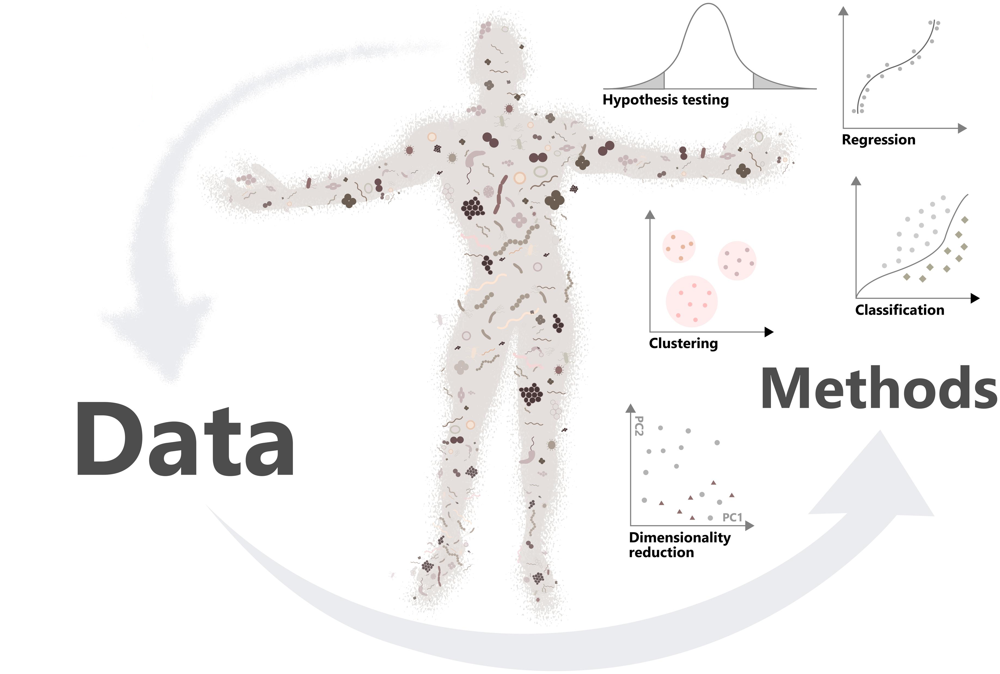

bash
docker run -it ghcr.io/microbiome/oma:devel RPackage: OMA
Authors:
- Leo Lahti [aut]
- Tuomas Borman [aut, cre]
- Felix GM Ernst [aut]
- and others (see the full list of contributors) [ctb]
Compiled: 2024-05-27
Package version: 0.98.21
R version: R version 4.4.0 (2024-04-24)
BioC version: 3.20
License: CC BY-NC-SA 4.0

This is a development version of the Orchestrating Microbiome Analysis with Bioconductor (Lahti et al. 2021) book from the the miaverse.
You are reading the online book, Orchestrating Microbiome Analysis with Bioconductor (Lahti et al. 2021), where we walk through common strategies and workflows in microbiome data science.
The book shows through concrete examples how you can take advantage of the latest developments in R/Bioconductor for the manipulation, analysis, and reproducible reporting of hierarchical and heterogeneous microbiome profiling data sets. The book was borne out of necessity, while updating microbiome analysis tools to work with Bioconductor classes that provide support for multi-modal data collections. Many of these techniques are generic and widely applicable in other contexts as well.
This work has been heavily influenced by other similar resources, in particular the Orchestrating Single-Cell Analysis with Bioconductor (Amezquita et al. 2020), phyloseq tutorials (Callahan et al. 2016) and microbiome tutorials (Shetty and Lahti 2019). This book extends these resources to teach the grammar of Bioconductor workflows in the context of microbiome data science. As such, it supports the adoption of general skills in the analysis of large, hierarchical, and multi-modal data collections. We focus on microbiome analysis tools, including entirely new, partially updated as well as previously established methods.
This online resource and its associated ecosystem of microbiome data science tools are a result of a community-driven development process, and welcoming new contributors. Several individuals have contributed methods, workflows and improvements as acknowledged in the Introduction. You can find more information on how to find us online and join the developer community through the project homepage at microbiome.github.io. This online resource has been written in RMarkdown with the bookdown R package. The material is free to use with the Creative Commons Attribution-NonCommercial 3.0 License.
A Docker image built from this repository is available here:
You can get access to all the packages used in this book in < 1 minute, using this command in a terminal:
bash
docker run -it ghcr.io/microbiome/oma:devel RAn RStudio Server instance can be initiated from the Docker image as follows:
bash
docker run \
--volume <local_folder>:<destination_folder> \
-e PASSWORD=OHCA \
-p 8787:8787 \
ghcr.io/microbiome/oma:develThe initiated RStudio Server instance will be available at https://localhost:8787.
sessioninfo::session_info(
installed.packages()[,"Package"],
include_base = TRUE
)
## ─ Session info ────────────────────────────────────────────────────────────
## setting value
## version R version 4.4.0 (2024-04-24)
## os Ubuntu 22.04.4 LTS
## system x86_64, linux-gnu
## ui X11
## language (EN)
## collate C
## ctype en_US.UTF-8
## tz Etc/UTC
## date 2024-05-27
## pandoc 3.2 @ /usr/bin/ (via rmarkdown)
##
## ─ Packages ────────────────────────────────────────────────────────────────
## package * version date (UTC) lib source
## abind 1.4-5 2016-07-21 [2] RSPM (R 4.4.0)
## additivityTests 1.1-4.2 2024-05-14 [2] RSPM (R 4.4.0)
## ade4 1.7-22 2023-02-06 [2] RSPM (R 4.4.0)
## ALDEx2 1.37.0 2024-05-01 [2] Bioconductor 3.20 (R 4.4.0)
## ANCOMBC 2.7.0 2024-05-01 [2] Bioconductor 3.20 (R 4.4.0)
## AnnotationDbi 1.67.0 2024-05-01 [2] Bioconductor 3.20 (R 4.4.0)
## AnnotationHub 3.13.0 2024-05-01 [2] Bioconductor 3.20 (R 4.4.0)
## ape 5.8 2024-04-11 [2] RSPM (R 4.4.0)
## aplot 0.2.2 2023-10-06 [2] RSPM (R 4.4.0)
## arrayhelpers 1.1-0 2020-02-04 [2] RSPM (R 4.4.0)
## askpass 1.2.0 2023-09-03 [2] RSPM (R 4.4.0)
## assertthat 0.2.1 2019-03-21 [2] RSPM (R 4.4.0)
## available 1.1.0 2022-07-10 [2] RSPM (R 4.4.0)
## backports 1.5.0 2024-05-23 [2] RSPM (R 4.4.0)
## base * 4.4.0 2024-05-06 [3] local
## base64enc 0.1-3 2015-07-28 [2] RSPM (R 4.4.0)
## bayesm 3.1-6 2023-09-23 [2] RSPM (R 4.4.0)
## beachmat 2.21.1 2024-05-24 [2] Bioconductor 3.20 (R 4.4.0)
## beeswarm 0.4.0 2021-06-01 [2] RSPM (R 4.4.0)
## BH 1.84.0-0 2024-01-10 [2] RSPM (R 4.4.0)
## biclust 2.0.3.1 2023-05-19 [2] RSPM (R 4.4.0)
## biglm 0.9-2.1 2020-11-27 [2] RSPM (R 4.4.0)
## Biobase 2.65.0 2024-05-01 [2] Bioconductor 3.20 (R 4.4.0)
## BiocBaseUtils 1.7.0 2024-05-01 [2] Bioconductor 3.20 (R 4.4.0)
## BiocBook 1.3.0 2024-05-01 [2] Bioconductor 3.20 (R 4.4.0)
## BiocFileCache 2.13.0 2024-05-01 [2] Bioconductor 3.20 (R 4.4.0)
## BiocGenerics 0.51.0 2024-05-01 [2] Bioconductor 3.20 (R 4.4.0)
## BiocManager 1.30.23 2024-05-04 [2] CRAN (R 4.4.0)
## BiocNeighbors 1.23.0 2024-05-01 [2] Bioconductor 3.20 (R 4.4.0)
## BiocParallel 1.39.0 2024-05-01 [2] Bioconductor 3.20 (R 4.4.0)
## BiocSingular 1.21.1 2024-05-24 [2] Bioconductor 3.20 (R 4.4.0)
## BiocStyle 2.33.0 2024-05-01 [2] Bioconductor 3.20 (R 4.4.0)
## BiocVersion 3.20.0 2024-05-01 [2] Bioconductor 3.20 (R 4.4.0)
## biomformat 1.33.0 2024-05-01 [2] Bioconductor 3.20 (R 4.4.0)
## Biostrings 2.73.0 2024-05-01 [2] Bioconductor 3.20 (R 4.4.0)
## bit 4.0.5 2022-11-15 [2] RSPM (R 4.4.0)
## bit64 4.0.5 2020-08-30 [2] RSPM (R 4.4.0)
## bitops 1.0-7 2021-04-24 [2] RSPM (R 4.4.0)
## blob 1.2.4 2023-03-17 [2] RSPM (R 4.4.0)
## bluster 1.15.0 2024-05-01 [2] Bioconductor 3.20 (R 4.4.0)
## bookdown 0.39 2024-04-15 [2] RSPM (R 4.4.0)
## boot 1.3-30 2024-02-26 [3] CRAN (R 4.4.0)
## brew 1.0-10 2023-12-16 [2] RSPM (R 4.4.0)
## brio 1.1.5 2024-04-24 [2] RSPM (R 4.4.0)
## broom 1.0.6 2024-05-17 [2] RSPM (R 4.4.0)
## bslib 0.7.0 2024-03-29 [2] RSPM (R 4.4.0)
## ca 0.71.1 2020-01-24 [2] RSPM (R 4.4.0)
## cachem 1.1.0 2024-05-16 [2] RSPM (R 4.4.0)
## Cairo 1.6-2 2023-11-28 [2] RSPM (R 4.4.0)
## callr 3.7.6 2024-03-25 [2] RSPM (R 4.4.0)
## car 3.1-2 2023-03-30 [2] RSPM (R 4.4.0)
## carData 3.0-5 2022-01-06 [2] RSPM (R 4.4.0)
## caret 6.0-94 2023-03-21 [2] RSPM (R 4.4.0)
## caTools 1.18.2 2021-03-28 [2] RSPM (R 4.4.0)
## cellranger 1.1.0 2016-07-27 [2] RSPM (R 4.4.0)
## checkmate 2.3.1 2023-12-04 [2] RSPM (R 4.4.0)
## chemometrics 1.4.4 2023-08-25 [2] RSPM (R 4.4.0)
## circlize 0.4.16 2024-02-20 [2] RSPM (R 4.4.0)
## class 7.3-22 2023-05-03 [3] CRAN (R 4.4.0)
## cli 3.6.2 2023-12-11 [2] RSPM (R 4.4.0)
## clipr 0.8.0 2022-02-22 [2] RSPM (R 4.4.0)
## clisymbols 1.2.0 2017-05-21 [2] RSPM (R 4.4.0)
## clock 0.7.0 2023-05-15 [2] RSPM (R 4.4.0)
## clue 0.3-65 2023-09-23 [2] RSPM (R 4.4.0)
## cluster 2.1.6 2023-12-01 [3] CRAN (R 4.4.0)
## cobiclust 0.1.2 2024-02-16 [2] RSPM (R 4.4.0)
## coda 0.19-4.1 2024-01-31 [2] RSPM (R 4.4.0)
## CodeDepends 0.6.6 2024-04-07 [2] RSPM (R 4.4.0)
## codetools 0.2-20 2024-03-31 [3] CRAN (R 4.4.0)
## colorspace 2.1-0 2023-01-23 [2] RSPM (R 4.4.0)
## commonmark 1.9.1 2024-01-30 [2] RSPM (R 4.4.0)
## compiler 4.4.0 2024-05-06 [3] local
## ComplexHeatmap 2.21.0 2024-05-01 [2] Bioconductor 3.20 (R 4.4.0)
## compositions 2.0-8 2024-01-31 [2] RSPM (R 4.4.0)
## conflicted 1.2.0 2023-02-01 [2] RSPM (R 4.4.0)
## corpcor 1.6.10 2021-09-16 [2] RSPM (R 4.4.0)
## corrplot 0.92 2021-11-18 [2] RSPM (R 4.4.0)
## cowplot 1.1.3 2024-01-22 [2] RSPM (R 4.4.0)
## cplm 0.7-12 2024-01-14 [2] RSPM (R 4.4.0)
## cpp11 0.4.7 2023-12-02 [2] RSPM (R 4.4.0)
## crayon 1.5.2 2022-09-29 [2] RSPM (R 4.4.0)
## credentials 2.0.1 2023-09-06 [2] RSPM (R 4.4.0)
## crosstalk 1.2.1 2023-11-23 [2] RSPM (R 4.4.0)
## cubature 2.1.0 2023-06-11 [2] RSPM (R 4.4.0)
## curatedMetagenomicData 3.13.0 2024-05-02 [2] Bioconductor 3.20 (R 4.4.0)
## curl 5.2.1 2024-03-01 [2] RSPM (R 4.4.0)
## cvAUC 1.1.4 2022-01-17 [2] RSPM (R 4.4.0)
## CVXR 1.0-12 2024-02-02 [2] RSPM (R 4.4.0)
## dada2 1.33.0 2024-05-01 [2] Bioconductor 3.20 (R 4.4.0)
## data.table 1.15.4 2024-03-30 [2] RSPM (R 4.4.0)
## datasets * 4.4.0 2024-05-06 [3] local
## DBI 1.2.2 2024-02-16 [2] RSPM (R 4.4.0)
## dbplyr 2.5.0 2024-03-19 [2] RSPM (R 4.4.0)
## DECIPHER 3.1.1 2024-05-20 [2] Bioconductor 3.20 (R 4.4.0)
## decontam 1.25.0 2024-05-01 [2] Bioconductor 3.20 (R 4.4.0)
## DelayedArray 0.31.1 2024-05-10 [2] Bioconductor 3.20 (R 4.4.0)
## DelayedMatrixStats 1.27.1 2024-05-24 [2] Bioconductor 3.20 (R 4.4.0)
## deldir 2.0-4 2024-02-28 [2] RSPM (R 4.4.0)
## dendextend 1.17.1 2023-03-25 [2] RSPM (R 4.4.0)
## DEoptimR 1.1-3 2023-10-07 [2] RSPM (R 4.4.0)
## desc 1.4.3 2023-12-10 [2] RSPM (R 4.4.0)
## DescTools 0.99.54 2024-02-03 [2] RSPM (R 4.4.0)
## devtools 2.4.5 2022-10-11 [2] RSPM (R 4.4.0)
## diagram 1.6.5 2020-09-30 [2] RSPM (R 4.4.0)
## diffobj 0.3.5 2021-10-05 [2] RSPM (R 4.4.0)
## digest 0.6.35 2024-03-11 [2] RSPM (R 4.4.0)
## diptest 0.77-1 2024-04-10 [2] RSPM (R 4.4.0)
## dir.expiry 1.13.0 2024-05-01 [2] Bioconductor 3.20 (R 4.4.0)
## directlabels 2024.1.21 2024-01-24 [2] RSPM (R 4.4.0)
## DirichletMultinomial 1.47.0 2024-05-01 [2] Bioconductor 3.20 (R 4.4.0)
## dirmult 0.1.3-5 2022-03-21 [2] RSPM (R 4.4.0)
## distributional 0.4.0 2024-02-07 [2] RSPM (R 4.4.0)
## docopt 0.7.1 2020-06-24 [2] RSPM (R 4.4.0)
## doFuture 1.0.1 2023-12-20 [2] RSPM (R 4.4.0)
## doParallel 1.0.17 2022-02-07 [2] RSPM (R 4.4.0)
## doRNG 1.8.6 2023-01-16 [2] RSPM (R 4.4.0)
## doSNOW 1.0.20 2022-02-04 [2] RSPM (R 4.4.0)
## downlit 0.4.3 2023-06-29 [2] RSPM (R 4.4.0)
## dplyr 1.1.4 2023-11-17 [2] RSPM (R 4.4.0)
## dqrng 0.4.0 2024-05-15 [2] RSPM (R 4.4.0)
## DT 0.33 2024-04-04 [2] RSPM (R 4.4.0)
## dtplyr 1.3.1 2023-03-22 [2] RSPM (R 4.4.0)
## dynamicTreeCut 1.63-1 2016-03-11 [2] RSPM (R 4.4.0)
## e1071 1.7-14 2023-12-06 [2] RSPM (R 4.4.0)
## ECOSolveR 0.5.5 2023-05-15 [2] RSPM (R 4.4.0)
## edgeR 4.3.4 2024-05-13 [2] Bioconductor 3.20 (R 4.4.0)
## egg 0.4.5 2019-07-13 [2] RSPM (R 4.4.0)
## ellipse 0.5.0 2023-07-20 [2] RSPM (R 4.4.0)
## ellipsis 0.3.2 2021-04-29 [2] RSPM (R 4.4.0)
## emmeans 1.10.2 2024-05-20 [2] RSPM (R 4.4.0)
## energy 1.7-11 2022-12-22 [2] RSPM (R 4.4.0)
## estimability 1.5.1 2024-05-12 [2] RSPM (R 4.4.0)
## evaluate 0.23 2023-11-01 [2] RSPM (R 4.4.0)
## Exact 3.2 2022-09-25 [2] RSPM (R 4.4.0)
## ExperimentHub 2.13.0 2024-05-01 [2] Bioconductor 3.20 (R 4.4.0)
## expm 0.999-9 2024-01-11 [2] RSPM (R 4.4.0)
## factoextra 1.0.7 2020-04-01 [2] RSPM (R 4.4.0)
## FactoMineR 2.11 2024-04-20 [2] RSPM (R 4.4.0)
## fansi 1.0.6 2023-12-08 [2] RSPM (R 4.4.0)
## farver 2.1.2 2024-05-13 [2] RSPM (R 4.4.0)
## fastcluster 1.2.6 2024-01-12 [2] RSPM (R 4.4.0)
## fastmap 1.2.0 2024-05-15 [2] RSPM (R 4.4.0)
## fBasics 4032.96 2023-11-03 [2] RSPM (R 4.4.0)
## fdrtool 1.2.17 2021-11-13 [2] RSPM (R 4.4.0)
## fido 1.0.4 2023-03-24 [2] RSPM (R 4.4.0)
## filelock 1.0.3 2023-12-11 [2] RSPM (R 4.4.0)
## filematrix 1.3 2018-02-27 [2] RSPM (R 4.4.0)
## flashClust 1.01-2 2012-08-21 [2] RSPM (R 4.4.0)
## flexclust 1.4-2 2024-04-27 [2] RSPM (R 4.4.0)
## flexmix 2.3-19 2023-03-16 [2] RSPM (R 4.4.0)
## fMultivar 4031.84 2023-07-11 [2] RSPM (R 4.4.0)
## FNN 1.1.4 2024-01-12 [2] RSPM (R 4.4.0)
## fontawesome 0.5.2 2023-08-19 [2] RSPM (R 4.4.0)
## forcats 1.0.0 2023-01-29 [2] RSPM (R 4.4.0)
## foreach 1.5.2 2022-02-02 [2] RSPM (R 4.4.0)
## foreign 0.8-86 2023-11-28 [3] CRAN (R 4.4.0)
## formatR 1.14 2023-01-17 [2] RSPM (R 4.4.0)
## Formula 1.2-5 2023-02-24 [2] RSPM (R 4.4.0)
## fpc 2.2-12 2024-04-30 [2] RSPM (R 4.4.0)
## fs 1.6.4 2024-04-25 [2] RSPM (R 4.4.0)
## futile.logger 1.4.3 2016-07-10 [2] RSPM (R 4.4.0)
## futile.options 1.0.1 2018-04-20 [2] RSPM (R 4.4.0)
## future 1.33.2 2024-03-26 [2] RSPM (R 4.4.0)
## future.apply 1.11.2 2024-03-28 [2] RSPM (R 4.4.0)
## gam 1.22-3 2023-11-29 [2] RSPM (R 4.4.0)
## gargle 1.5.2 2023-07-20 [2] RSPM (R 4.4.0)
## gclus 1.3.2 2019-01-07 [2] RSPM (R 4.4.0)
## generics 0.1.3 2022-07-05 [2] RSPM (R 4.4.0)
## GenomeInfoDb 1.41.1 2024-05-24 [2] Bioconductor 3.20 (R 4.4.0)
## GenomeInfoDbData 1.2.12 2024-05-21 [2] Bioconductor
## GenomicAlignments 1.41.0 2024-05-01 [2] Bioconductor 3.20 (R 4.4.0)
## GenomicRanges 1.57.0 2024-05-01 [2] Bioconductor 3.20 (R 4.4.0)
## geometry 0.4.7 2023-02-03 [2] RSPM (R 4.4.0)
## gert 2.0.1 2023-12-04 [2] RSPM (R 4.4.0)
## getopt 1.20.4 2023-10-01 [2] RSPM (R 4.4.0)
## GetoptLong 1.0.5 2020-12-15 [2] RSPM (R 4.4.0)
## ggbeeswarm 0.7.2 2023-04-29 [2] RSPM (R 4.4.0)
## ggdist 3.3.2 2024-03-05 [2] RSPM (R 4.4.0)
## ggforce 0.4.2 2024-02-19 [2] RSPM (R 4.4.0)
## ggfun 0.1.4 2024-01-19 [2] RSPM (R 4.4.0)
## ggnewscale 0.4.10 2024-02-08 [2] RSPM (R 4.4.0)
## ggplot2 3.5.1 2024-04-23 [2] RSPM (R 4.4.0)
## ggplotify 0.1.2 2023-08-09 [2] RSPM (R 4.4.0)
## ggpubr 0.6.0 2023-02-10 [2] RSPM (R 4.4.0)
## ggraph 2.2.1 2024-03-07 [2] RSPM (R 4.4.0)
## ggrastr 1.0.2 2023-06-01 [2] RSPM (R 4.4.0)
## ggrepel 0.9.5 2024-01-10 [2] RSPM (R 4.4.0)
## ggsci 3.1.0 2024-05-21 [2] RSPM (R 4.4.0)
## ggsignif 0.6.4 2022-10-13 [2] RSPM (R 4.4.0)
## ggtree 3.13.0 2024-05-01 [2] Bioconductor 3.20 (R 4.4.0)
## gh 1.4.1 2024-03-28 [2] RSPM (R 4.4.0)
## gitcreds 0.1.2 2022-09-08 [2] RSPM (R 4.4.0)
## glasso 1.11 2019-10-01 [2] RSPM (R 4.4.0)
## gld 2.6.6 2022-10-23 [2] RSPM (R 4.4.0)
## glmmTMB 1.1.9 2024-03-20 [2] RSPM (R 4.4.0)
## glmnet 4.1-8 2023-08-22 [2] RSPM (R 4.4.0)
## GlobalOptions 0.1.2 2020-06-10 [2] RSPM (R 4.4.0)
## globals 0.16.3 2024-03-08 [2] RSPM (R 4.4.0)
## glue 1.7.0 2024-01-09 [2] RSPM (R 4.4.0)
## gmp 0.7-4 2024-01-15 [2] RSPM (R 4.4.0)
## GO.db 3.19.1 2024-05-21 [2] Bioconductor
## googledrive 2.1.1 2023-06-11 [2] RSPM (R 4.4.0)
## googlesheets4 1.1.1 2023-06-11 [2] RSPM (R 4.4.0)
## gower 1.0.1 2022-12-22 [2] RSPM (R 4.4.0)
## gplots 3.1.3.1 2024-02-02 [2] RSPM (R 4.4.0)
## graph 1.83.0 2024-05-01 [2] Bioconductor 3.20 (R 4.4.0)
## graphics * 4.4.0 2024-05-06 [3] local
## graphlayouts 1.1.1 2024-03-09 [2] RSPM (R 4.4.0)
## grDevices * 4.4.0 2024-05-06 [3] local
## grid 4.4.0 2024-05-06 [3] local
## gridExtra 2.3 2017-09-09 [2] RSPM (R 4.4.0)
## gridGraphics 0.5-1 2020-12-13 [2] RSPM (R 4.4.0)
## gsEasy 1.5 2024-02-20 [2] RSPM (R 4.4.0)
## gsl 2.1-8 2023-01-24 [2] RSPM (R 4.4.0)
## gss 2.2-7 2023-08-16 [2] RSPM (R 4.4.0)
## gtable 0.3.5 2024-04-22 [2] RSPM (R 4.4.0)
## gtools 3.9.5 2023-11-20 [2] RSPM (R 4.4.0)
## GUniFrac 1.8 2023-09-14 [2] RSPM (R 4.4.0)
## hardhat 1.3.1 2024-02-02 [2] RSPM (R 4.4.0)
## hash 2.2.6.3 2023-08-19 [2] RSPM (R 4.4.0)
## haven 2.5.4 2023-11-30 [2] RSPM (R 4.4.0)
## heatmaply 1.5.0 2023-10-06 [2] RSPM (R 4.4.0)
## here 1.0.1 2020-12-13 [2] RSPM (R 4.4.0)
## highr 0.11 2024-05-26 [2] RSPM (R 4.4.0)
## Hmisc 5.1-2 2024-03-11 [2] RSPM (R 4.4.0)
## hms 1.1.3 2023-03-21 [2] RSPM (R 4.4.0)
## htmlTable 2.4.2 2023-10-29 [2] RSPM (R 4.4.0)
## htmltools * 0.5.8.1 2024-04-04 [2] RSPM (R 4.4.0)
## htmlwidgets 1.6.4 2023-12-06 [2] RSPM (R 4.4.0)
## httpuv 1.6.15 2024-03-26 [2] RSPM (R 4.4.0)
## httr 1.4.7 2023-08-15 [2] RSPM (R 4.4.0)
## httr2 1.0.1 2024-04-01 [2] RSPM (R 4.4.0)
## huge 1.3.5 2021-06-30 [2] RSPM (R 4.4.0)
## hwriter 1.3.2.1 2022-04-08 [2] RSPM (R 4.4.0)
## ids 1.0.1 2017-05-31 [2] RSPM (R 4.4.0)
## igraph 2.0.3 2024-03-13 [2] RSPM (R 4.4.0)
## impute 1.79.0 2024-05-01 [2] Bioconductor 3.20 (R 4.4.0)
## ini 0.3.1 2018-05-20 [2] RSPM (R 4.4.0)
## inline 0.3.19 2021-05-31 [2] RSPM (R 4.4.0)
## interp 1.1-6 2024-01-26 [2] RSPM (R 4.4.0)
## ipred 0.9-14 2023-03-09 [2] RSPM (R 4.4.0)
## IRanges 2.39.0 2024-05-01 [2] Bioconductor 3.20 (R 4.4.0)
## irlba 2.3.5.1 2022-10-03 [2] RSPM (R 4.4.0)
## isoband 0.2.7 2022-12-20 [2] RSPM (R 4.4.0)
## iterators 1.0.14 2022-02-05 [2] RSPM (R 4.4.0)
## janeaustenr 1.0.0 2022-08-26 [2] RSPM (R 4.4.0)
## jpeg 0.1-10 2022-11-29 [2] RSPM (R 4.4.0)
## jquerylib 0.1.4 2021-04-26 [2] RSPM (R 4.4.0)
## jsonlite 1.8.8 2023-12-04 [2] RSPM (R 4.4.0)
## kableExtra 1.4.0 2024-01-24 [2] RSPM (R 4.4.0)
## KEGGREST 1.45.0 2024-05-01 [2] Bioconductor 3.20 (R 4.4.0)
## kernlab 0.9-32 2023-01-31 [2] RSPM (R 4.4.0)
## KernSmooth 2.23-24 2024-05-17 [2] RSPM (R 4.4.0)
## knitr 1.46 2024-04-06 [2] RSPM (R 4.4.0)
## labeling 0.4.3 2023-08-29 [2] RSPM (R 4.4.0)
## lambda.r 1.2.4 2019-09-18 [2] RSPM (R 4.4.0)
## lars 1.3 2022-04-13 [2] RSPM (R 4.4.0)
## latentcor 2.0.1 2022-09-05 [2] RSPM (R 4.4.0)
## later 1.3.2 2023-12-06 [2] RSPM (R 4.4.0)
## lattice 0.22-6 2024-03-20 [3] CRAN (R 4.4.0)
## latticeExtra 0.6-30 2022-07-04 [2] RSPM (R 4.4.0)
## lava 1.8.0 2024-03-05 [2] RSPM (R 4.4.0)
## lavaan 0.6-17 2023-12-20 [2] RSPM (R 4.4.0)
## lazyeval 0.2.2 2019-03-15 [2] RSPM (R 4.4.0)
## leaps 3.1 2020-01-16 [2] RSPM (R 4.4.0)
## lifecycle 1.0.4 2023-11-07 [2] RSPM (R 4.4.0)
## limma 3.61.1 2024-05-20 [2] Bioconductor 3.20 (R 4.4.0)
## linprog 0.9-4 2022-03-09 [2] RSPM (R 4.4.0)
## listenv 0.9.1 2024-01-29 [2] RSPM (R 4.4.0)
## littler 0.3.20 2024-03-23 [2] RSPM (R 4.4.0)
## lme4 1.1-35.3 2024-04-16 [2] RSPM (R 4.4.0)
## lmerTest 3.1-3 2020-10-23 [2] RSPM (R 4.4.0)
## lmom 3.0 2023-08-29 [2] RSPM (R 4.4.0)
## locfit 1.5-9.9 2024-03-01 [2] RSPM (R 4.4.0)
## logging 0.10-108 2019-07-14 [2] RSPM (R 4.4.0)
## lpSolve 5.6.20 2023-12-10 [2] RSPM (R 4.4.0)
## lubridate 1.9.3 2023-09-27 [2] RSPM (R 4.4.0)
## Maaslin2 1.19.0 2024-05-01 [2] Bioconductor 3.20 (R 4.4.0)
## magic 1.6-1 2022-11-16 [2] RSPM (R 4.4.0)
## magrittr 2.0.3 2022-03-30 [2] RSPM (R 4.4.0)
## MASS 7.3-60.2 2024-05-06 [3] local
## mathjaxr 1.6-0 2022-02-28 [2] RSPM (R 4.4.0)
## Matrix 1.7-0 2024-03-22 [3] CRAN (R 4.4.0)
## MatrixGenerics 1.17.0 2024-05-01 [2] Bioconductor 3.20 (R 4.4.0)
## MatrixModels 0.5-3 2023-11-06 [2] RSPM (R 4.4.0)
## matrixStats 1.3.0 2024-04-11 [2] RSPM (R 4.4.0)
## mclust 6.1.1 2024-04-29 [2] RSPM (R 4.4.0)
## mediation 4.5.0 2019-10-08 [2] RSPM (R 4.4.0)
## memoise 2.0.1 2021-11-26 [2] RSPM (R 4.4.0)
## metadat 1.2-0 2022-04-06 [2] RSPM (R 4.4.0)
## metafor 4.6-0 2024-03-28 [2] RSPM (R 4.4.0)
## metagenomeSeq 1.47.0 2024-05-01 [2] Bioconductor 3.20 (R 4.4.0)
## methods * 4.4.0 2024-05-06 [3] local
## mgcv 1.9-1 2023-12-21 [3] CRAN (R 4.4.0)
## mia 1.13.18 2024-05-27 [2] Github (microbiome/mia@b627edc)
## miaTime 0.1.21 2024-05-27 [2] Github (microbiome/miaTime@9fe9771)
## miaViz 1.13.0 2024-05-01 [2] Bioconductor 3.20 (R 4.4.0)
## microbenchmark 1.4.10 2023-04-28 [2] RSPM (R 4.4.0)
## microbiome 1.27.0 2024-05-01 [2] Bioconductor 3.20 (R 4.4.0)
## microbiomeDataSets 1.13.0 2024-05-02 [2] Bioconductor 3.20 (R 4.4.0)
## MicrobiomeStat 1.2 2024-04-01 [2] RSPM (R 4.4.0)
## mikropml 1.6.1 2023-08-21 [2] RSPM (R 4.4.0)
## mime 0.12 2021-09-28 [2] RSPM (R 4.4.0)
## miniUI 0.1.1.1 2018-05-18 [2] RSPM (R 4.4.0)
## minqa 1.2.7 2024-05-20 [2] RSPM (R 4.4.0)
## mixedCCA 1.6.2 2022-09-09 [2] RSPM (R 4.4.0)
## MLeval 0.3 2020-02-12 [2] RSPM (R 4.4.0)
## MLmetrics 1.1.3 2024-04-13 [2] RSPM (R 4.4.0)
## MMUPHin 1.19.1 2024-05-20 [2] Bioconductor 3.20 (R 4.4.0)
## mnormt 2.1.1 2022-09-26 [2] RSPM (R 4.4.0)
## modeest 2.4.0 2019-11-18 [2] RSPM (R 4.4.0)
## ModelMetrics 1.2.2.2 2020-03-17 [2] RSPM (R 4.4.0)
## modelr 0.1.11 2023-03-22 [2] RSPM (R 4.4.0)
## modeltools 0.2-23 2020-03-05 [2] RSPM (R 4.4.0)
## multcomp 1.4-25 2023-06-20 [2] RSPM (R 4.4.0)
## multcompView 0.1-10 2024-03-08 [2] RSPM (R 4.4.0)
## MultiAssayExperiment 1.31.1 2024-05-03 [2] Bioconductor 3.20 (R 4.4.0)
## multiview 0.8 2023-03-31 [2] RSPM (R 4.4.0)
## multtest 2.61.0 2024-05-01 [2] Bioconductor 3.20 (R 4.4.0)
## munsell 0.5.1 2024-04-01 [2] RSPM (R 4.4.0)
## mvtnorm 1.2-5 2024-05-21 [2] RSPM (R 4.4.0)
## NADA 1.6-1.1 2020-03-22 [2] RSPM (R 4.4.0)
## NbClust 3.0.1 2022-05-02 [2] RSPM (R 4.4.0)
## NetCoMi 1.1.0 2024-05-27 [2] Github (stefpeschel/NetCoMi@0809c7a)
## nlme 3.1-164 2023-11-27 [3] CRAN (R 4.4.0)
## nloptr 2.0.3 2022-05-26 [2] RSPM (R 4.4.0)
## nnet 7.3-19 2023-05-03 [3] CRAN (R 4.4.0)
## nnls 1.5 2023-09-11 [2] RSPM (R 4.4.0)
## numDeriv 2016.8-1.1 2019-06-06 [2] RSPM (R 4.4.0)
## OMA 0.98.21 2024-05-27 [1] Bioconductor
## ontologyIndex 2.12 2024-02-27 [2] RSPM (R 4.4.0)
## openssl 2.2.0 2024-05-16 [2] RSPM (R 4.4.0)
## optparse 1.7.5 2024-04-16 [2] RSPM (R 4.4.0)
## orca 1.1-2 2023-12-13 [2] RSPM (R 4.4.0)
## osqp 0.6.3.2 2023-10-20 [2] RSPM (R 4.4.0)
## parallel 4.4.0 2024-05-06 [3] local
## parallelly 1.37.1 2024-02-29 [2] RSPM (R 4.4.0)
## patchwork 1.2.0 2024-01-08 [2] RSPM (R 4.4.0)
## pbapply 1.7-2 2023-06-27 [2] RSPM (R 4.4.0)
## pbivnorm 0.6.0 2015-01-23 [2] RSPM (R 4.4.0)
## pbkrtest 0.5.2 2023-01-19 [2] RSPM (R 4.4.0)
## pcaPP 2.0-4 2023-12-07 [2] RSPM (R 4.4.0)
## permute 0.9-7 2022-01-27 [2] RSPM (R 4.4.0)
## pheatmap 1.0.12 2019-01-04 [2] RSPM (R 4.4.0)
## phyloseq 1.49.0 2024-05-01 [2] Bioconductor 3.20 (R 4.4.0)
## pillar 1.9.0 2023-03-22 [2] RSPM (R 4.4.0)
## pixmap 0.4-13 2024-05-03 [2] RSPM (R 4.4.0)
## pkgbuild 1.4.4 2024-03-17 [2] RSPM (R 4.4.0)
## pkgconfig 2.0.3 2019-09-22 [2] RSPM (R 4.4.0)
## pkgdown 2.0.9 2024-04-18 [2] RSPM (R 4.4.0)
## pkgload 1.3.4 2024-01-16 [2] RSPM (R 4.4.0)
## plogr 0.2.0 2018-03-25 [2] RSPM (R 4.4.0)
## plotly 4.10.4 2024-01-13 [2] RSPM (R 4.4.0)
## pls 2.8-3 2023-11-17 [2] RSPM (R 4.4.0)
## plyr 1.8.9 2023-10-02 [2] RSPM (R 4.4.0)
## png 0.1-8 2022-11-29 [2] RSPM (R 4.4.0)
## polyclip 1.10-6 2023-09-27 [2] RSPM (R 4.4.0)
## polynom 1.4-1 2022-04-11 [2] RSPM (R 4.4.0)
## posterior 1.5.0 2023-10-31 [2] RSPM (R 4.4.0)
## prabclus 2.3-3 2023-10-24 [2] RSPM (R 4.4.0)
## praise 1.0.0 2015-08-11 [2] RSPM (R 4.4.0)
## preprocessCore 1.67.0 2024-05-01 [2] Bioconductor 3.20 (R 4.4.0)
## prettyunits 1.2.0 2023-09-24 [2] RSPM (R 4.4.0)
## pROC 1.18.5 2023-11-01 [2] RSPM (R 4.4.0)
## processx 3.8.4 2024-03-16 [2] RSPM (R 4.4.0)
## prodlim 2023.08.28 2023-08-28 [2] RSPM (R 4.4.0)
## profvis 0.3.8 2023-05-02 [2] RSPM (R 4.4.0)
## progress 1.2.3 2023-12-06 [2] RSPM (R 4.4.0)
## progressr 0.14.0 2023-08-10 [2] RSPM (R 4.4.0)
## promises 1.3.0 2024-04-05 [2] RSPM (R 4.4.0)
## proxy 0.4-27 2022-06-09 [2] RSPM (R 4.4.0)
## ps 1.7.6 2024-01-18 [2] RSPM (R 4.4.0)
## pscl 1.5.9 2024-01-31 [2] RSPM (R 4.4.0)
## psych 2.4.3 2024-03-18 [2] RSPM (R 4.4.0)
## pulsar 0.3.11 2023-09-24 [2] RSPM (R 4.4.0)
## purrr 1.0.2 2023-08-10 [2] RSPM (R 4.4.0)
## pwalign 1.1.0 2024-05-01 [2] Bioconductor 3.20 (R 4.4.0)
## qap 0.1-2 2022-06-27 [2] RSPM (R 4.4.0)
## qgraph 1.9.8 2023-11-03 [2] RSPM (R 4.4.0)
## quadprog 1.5-8 2019-11-20 [2] RSPM (R 4.4.0)
## quantreg 5.98 2024-05-26 [2] RSPM (R 4.4.0)
## quarto 1.4 2024-03-06 [2] RSPM (R 4.4.0)
## R6 2.5.1 2021-08-19 [2] RSPM (R 4.4.0)
## ragg 1.3.2 2024-05-15 [2] RSPM (R 4.4.0)
## randomcoloR 1.1.0.1 2019-11-24 [2] RSPM (R 4.4.0)
## randomForest 4.7-1.1 2022-05-23 [2] RSPM (R 4.4.0)
## rappdirs 0.3.3 2021-01-31 [2] RSPM (R 4.4.0)
## rbibutils 2.2.16 2023-10-25 [2] RSPM (R 4.4.0)
## rcmdcheck 1.4.0 2021-09-27 [2] RSPM (R 4.4.0)
## RColorBrewer 1.1-3 2022-04-03 [2] RSPM (R 4.4.0)
## Rcpp 1.0.12 2024-01-09 [2] RSPM (R 4.4.0)
## RcppAnnoy 0.0.22 2024-01-23 [2] RSPM (R 4.4.0)
## RcppArmadillo 0.12.8.3.0 2024-05-08 [2] RSPM (R 4.4.0)
## RcppEigen 0.3.4.0.0 2024-02-28 [2] RSPM (R 4.4.0)
## RcppGSL 0.3.13 2023-01-13 [2] RSPM (R 4.4.0)
## RcppHNSW 0.6.0 2024-02-04 [2] RSPM (R 4.4.0)
## RcppML 0.3.7 2021-09-21 [2] RSPM (R 4.4.0)
## RcppNumerical 0.6-0 2023-09-06 [2] RSPM (R 4.4.0)
## RcppParallel 5.1.7 2023-02-27 [2] RSPM (R 4.4.0)
## RcppProgress 0.4.2 2020-02-06 [2] RSPM (R 4.4.0)
## RcppTOML 0.2.2 2023-01-29 [2] RSPM (R 4.4.0)
## RcppZiggurat 0.1.6 2020-10-20 [2] RSPM (R 4.4.0)
## Rdpack 2.6 2023-11-08 [2] RSPM (R 4.4.0)
## readr 2.1.5 2024-01-10 [2] RSPM (R 4.4.0)
## readxl 1.4.3 2023-07-06 [2] RSPM (R 4.4.0)
## rebook 1.15.0 2024-05-01 [2] Bioconductor 3.20 (R 4.4.0)
## recipes 1.0.10 2024-02-18 [2] RSPM (R 4.4.0)
## registry 0.5-1 2019-03-05 [2] RSPM (R 4.4.0)
## rematch 2.0.0 2023-08-30 [2] RSPM (R 4.4.0)
## rematch2 2.1.2 2020-05-01 [2] RSPM (R 4.4.0)
## remotes 2.5.0 2024-03-17 [2] RSPM (R 4.4.0)
## renv 1.0.7 2024-04-11 [2] RSPM (R 4.4.0)
## reprex 2.1.0 2024-01-11 [2] RSPM (R 4.4.0)
## reshape2 1.4.4 2020-04-09 [2] RSPM (R 4.4.0)
## reticulate 1.37.0 2024-05-21 [2] RSPM (R 4.4.0)
## Rfast 2.1.0 2023-11-09 [2] RSPM (R 4.4.0)
## rgl 1.3.1 2024-03-05 [2] RSPM (R 4.4.0)
## rhdf5 2.49.0 2024-05-01 [2] Bioconductor 3.20 (R 4.4.0)
## rhdf5filters 1.17.0 2024-05-01 [2] Bioconductor 3.20 (R 4.4.0)
## Rhdf5lib 1.27.0 2024-05-01 [2] Bioconductor 3.20 (R 4.4.0)
## Rhtslib 3.1.0 2024-05-01 [2] Bioconductor 3.20 (R 4.4.0)
## rjson 0.2.21 2022-01-09 [2] RSPM (R 4.4.0)
## rlang 1.1.3 2024-01-10 [2] RSPM (R 4.4.0)
## rmarkdown 2.27 2024-05-17 [2] RSPM (R 4.4.0)
## Rmpfr 0.9-5 2024-01-21 [2] RSPM (R 4.4.0)
## rmutil 1.1.10 2022-10-27 [2] RSPM (R 4.4.0)
## rngtools 1.5.2 2021-09-20 [2] RSPM (R 4.4.0)
## robustbase 0.99-2 2024-01-27 [2] RSPM (R 4.4.0)
## ROCR 1.0-11 2020-05-02 [2] RSPM (R 4.4.0)
## rootSolve 1.8.2.4 2023-09-21 [2] RSPM (R 4.4.0)
## roxygen2 7.3.1 2024-01-22 [2] RSPM (R 4.4.0)
## rpart 4.1.23 2023-12-05 [3] CRAN (R 4.4.0)
## rprojroot 2.0.4 2023-11-05 [2] RSPM (R 4.4.0)
## Rsamtools 2.21.0 2024-05-01 [2] Bioconductor 3.20 (R 4.4.0)
## RSpectra 0.16-1 2022-04-24 [2] RSPM (R 4.4.0)
## RSQLite 2.3.6 2024-03-31 [2] RSPM (R 4.4.0)
## rstatix 0.7.2 2023-02-01 [2] RSPM (R 4.4.0)
## rstudioapi 0.16.0 2024-03-24 [2] RSPM (R 4.4.0)
## rsvd 1.0.5 2021-04-16 [2] RSPM (R 4.4.0)
## Rtsne 0.17 2023-12-07 [2] RSPM (R 4.4.0)
## rversions 2.1.2 2022-08-31 [2] RSPM (R 4.4.0)
## rvest 1.0.4 2024-02-12 [2] RSPM (R 4.4.0)
## S4Arrays 1.5.1 2024-05-20 [2] Bioconductor 3.20 (R 4.4.0)
## S4Vectors 0.43.0 2024-05-01 [2] Bioconductor 3.20 (R 4.4.0)
## sandwich 3.1-0 2023-12-11 [2] RSPM (R 4.4.0)
## sass 0.4.9 2024-03-15 [2] RSPM (R 4.4.0)
## ScaledMatrix 1.13.0 2024-05-01 [2] Bioconductor 3.20 (R 4.4.0)
## scales 1.3.0 2023-11-28 [2] RSPM (R 4.4.0)
## scater 1.33.0 2024-05-01 [2] Bioconductor 3.20 (R 4.4.0)
## scatterplot3d 0.3-44 2023-05-05 [2] RSPM (R 4.4.0)
## scs 3.2.4 2023-04-11 [2] RSPM (R 4.4.0)
## scuttle 1.15.0 2024-05-01 [2] Bioconductor 3.20 (R 4.4.0)
## sechm 1.13.0 2024-05-01 [2] Bioconductor 3.20 (R 4.4.0)
## selectr 0.4-2 2019-11-20 [2] RSPM (R 4.4.0)
## seriation 1.5.5 2024-04-17 [2] RSPM (R 4.4.0)
## sessioninfo 1.2.2 2021-12-06 [2] RSPM (R 4.4.0)
## shape 1.4.6.1 2024-02-23 [2] RSPM (R 4.4.0)
## shiny 1.8.1.1 2024-04-02 [2] RSPM (R 4.4.0)
## ShortRead 1.63.0 2024-05-01 [2] Bioconductor 3.20 (R 4.4.0)
## SingleCellExperiment 1.27.2 2024-05-24 [2] Bioconductor 3.20 (R 4.4.0)
## sitmo 2.0.2 2021-10-13 [2] RSPM (R 4.4.0)
## sn 2.1.1 2023-04-04 [2] RSPM (R 4.4.0)
## snow 0.4-4 2021-10-27 [2] RSPM (R 4.4.0)
## SnowballC 0.7.1 2023-04-25 [2] RSPM (R 4.4.0)
## som 0.3-5.1 2016-07-06 [2] RSPM (R 4.4.0)
## sourcetools 0.1.7-1 2023-02-01 [2] RSPM (R 4.4.0)
## sp 2.1-4 2024-04-30 [2] RSPM (R 4.4.0)
## SparseArray 1.5.7 2024-05-24 [2] Bioconductor 3.20 (R 4.4.0)
## SparseM 1.81 2021-02-18 [2] RSPM (R 4.4.0)
## sparseMatrixStats 1.17.0 2024-05-01 [2] Bioconductor 3.20 (R 4.4.0)
## spatial 7.3-17 2023-07-20 [3] CRAN (R 4.4.0)
## SpiecEasi 1.1.3 2024-05-27 [2] Github (zdk123/SpiecEasi@5f396da)
## splines 4.4.0 2024-05-06 [3] local
## SPRING 1.0.4 2024-05-27 [2] Github (GraceYoon/SPRING@3d641a4)
## SQUAREM 2021.1 2021-01-13 [2] RSPM (R 4.4.0)
## stable 1.1.6 2022-03-02 [2] RSPM (R 4.4.0)
## stabledist 0.7-1 2016-09-12 [2] RSPM (R 4.4.0)
## statip 0.2.3 2019-11-17 [2] RSPM (R 4.4.0)
## statmod 1.5.0 2023-01-06 [2] RSPM (R 4.4.0)
## stats * 4.4.0 2024-05-06 [3] local
## stats4 4.4.0 2024-05-06 [3] local
## stringdist 0.9.12 2023-11-28 [2] RSPM (R 4.4.0)
## stringi 1.8.4 2024-05-06 [2] RSPM (R 4.4.0)
## stringr 1.5.1 2023-11-14 [2] RSPM (R 4.4.0)
## SummarizedExperiment 1.35.0 2024-05-01 [2] Bioconductor 3.20 (R 4.4.0)
## SuperLearner 2.0-29 2024-02-20 [2] RSPM (R 4.4.0)
## survival 3.6-4 2024-04-24 [2] RSPM (R 4.4.0)
## svglite 2.1.3 2023-12-08 [2] RSPM (R 4.4.0)
## svUnit 1.0.6 2021-04-19 [2] RSPM (R 4.4.0)
## sys 3.4.2 2023-05-23 [2] RSPM (R 4.4.0)
## systemfonts 1.1.0 2024-05-15 [2] RSPM (R 4.4.0)
## tcltk 4.4.0 2024-05-06 [3] local
## tensorA 0.36.2.1 2023-12-13 [2] RSPM (R 4.4.0)
## testthat 3.2.1.1 2024-04-14 [2] RSPM (R 4.4.0)
## textshaping 0.4.0 2024-05-24 [2] RSPM (R 4.4.0)
## TH.data 1.1-2 2023-04-17 [2] RSPM (R 4.4.0)
## tibble 3.2.1 2023-03-20 [2] RSPM (R 4.4.0)
## tidybayes 3.0.6 2023-08-12 [2] RSPM (R 4.4.0)
## tidygraph 1.3.1 2024-01-30 [2] RSPM (R 4.4.0)
## tidyr 1.3.1 2024-01-24 [2] RSPM (R 4.4.0)
## tidyselect 1.2.1 2024-03-11 [2] RSPM (R 4.4.0)
## tidytext 0.4.2 2024-04-10 [2] RSPM (R 4.4.0)
## tidytree 0.4.6 2023-12-12 [2] RSPM (R 4.4.0)
## tidyverse 2.0.0 2023-02-22 [2] RSPM (R 4.4.0)
## timechange 0.3.0 2024-01-18 [2] RSPM (R 4.4.0)
## timeDate 4032.109 2023-12-14 [2] RSPM (R 4.4.0)
## timeSeries 4032.109 2024-01-14 [2] RSPM (R 4.4.0)
## tinytex 0.51 2024-05-06 [2] RSPM (R 4.4.0)
## TMB 1.9.11 2024-04-03 [2] RSPM (R 4.4.0)
## tokenizers 0.3.0 2022-12-22 [2] RSPM (R 4.4.0)
## tools 4.4.0 2024-05-06 [3] local
## topGO 2.57.0 2024-05-01 [2] Bioconductor 3.20 (R 4.4.0)
## treeio 1.29.0 2024-05-01 [2] Bioconductor 3.20 (R 4.4.0)
## TreeSummarizedExperiment 2.13.0 2024-05-01 [2] Bioconductor 3.20 (R 4.4.0)
## truncnorm 1.0-9 2023-03-20 [2] RSPM (R 4.4.0)
## TSP 1.2-4 2023-04-04 [2] RSPM (R 4.4.0)
## tweedie 2.3.5 2022-08-17 [2] RSPM (R 4.4.0)
## tweenr 2.0.3 2024-02-26 [2] RSPM (R 4.4.0)
## tzdb 0.4.0 2023-05-12 [2] RSPM (R 4.4.0)
## UCSC.utils 1.1.0 2024-05-01 [2] Bioconductor 3.20 (R 4.4.0)
## urlchecker 1.0.1 2021-11-30 [2] RSPM (R 4.4.0)
## usethis 2.2.3 2024-02-19 [2] RSPM (R 4.4.0)
## utf8 1.2.4 2023-10-22 [2] RSPM (R 4.4.0)
## utils * 4.4.0 2024-05-06 [3] local
## uuid 1.2-0 2024-01-14 [2] RSPM (R 4.4.0)
## uwot 0.2.2 2024-04-21 [2] RSPM (R 4.4.0)
## V8 4.4.2 2024-02-15 [2] RSPM (R 4.4.0)
## vctrs 0.6.5 2023-12-01 [2] RSPM (R 4.4.0)
## vegan 2.6-6.1 2024-05-21 [2] RSPM (R 4.4.0)
## VGAM 1.1-11 2024-05-15 [2] RSPM (R 4.4.0)
## vipor 0.4.7 2023-12-18 [2] RSPM (R 4.4.0)
## viridis 0.6.5 2024-01-29 [2] RSPM (R 4.4.0)
## viridisLite 0.4.2 2023-05-02 [2] RSPM (R 4.4.0)
## vroom 1.6.5 2023-12-05 [2] RSPM (R 4.4.0)
## waldo 0.5.2 2023-11-02 [2] RSPM (R 4.4.0)
## webshot 0.5.5 2023-06-26 [2] RSPM (R 4.4.0)
## WGCNA 1.72-5 2023-12-07 [2] RSPM (R 4.4.0)
## whisker 0.4.1 2022-12-05 [2] RSPM (R 4.4.0)
## withr 3.0.0 2024-01-16 [2] RSPM (R 4.4.0)
## Wrench 1.23.0 2024-05-01 [2] Bioconductor 3.20 (R 4.4.0)
## xfun 0.44 2024-05-15 [2] RSPM (R 4.4.0)
## xgboost 1.7.7.1 2024-01-25 [2] RSPM (R 4.4.0)
## XML 3.99-0.16.1 2024-01-22 [2] RSPM (R 4.4.0)
## xml2 1.3.6 2023-12-04 [2] RSPM (R 4.4.0)
## xopen 1.0.1 2024-04-25 [2] RSPM (R 4.4.0)
## xtable 1.8-4 2019-04-21 [2] RSPM (R 4.4.0)
## XVector 0.45.0 2024-05-01 [2] Bioconductor 3.20 (R 4.4.0)
## yaml 2.3.8 2023-12-11 [2] RSPM (R 4.4.0)
## yesno 0.1.2 2020-07-10 [2] RSPM (R 4.4.0)
## yulab.utils 0.1.4 2024-01-28 [2] RSPM (R 4.4.0)
## zCompositions 1.5.0-3 2024-03-13 [2] RSPM (R 4.4.0)
## zip 2.3.1 2024-01-27 [2] RSPM (R 4.4.0)
## zlibbioc 1.51.0 2024-05-01 [2] Bioconductor 3.20 (R 4.4.0)
## zoo 1.8-12 2023-04-13 [2] RSPM (R 4.4.0)
##
## [1] /tmp/Rtmp52iabf/Rinstb856fa9
## [2] /usr/local/lib/R/site-library
## [3] /usr/local/lib/R/library
##
## ─ Python configuration ────────────────────────────────────────────────────
## Python is not available
##
## ───────────────────────────────────────────────────────────────────────────